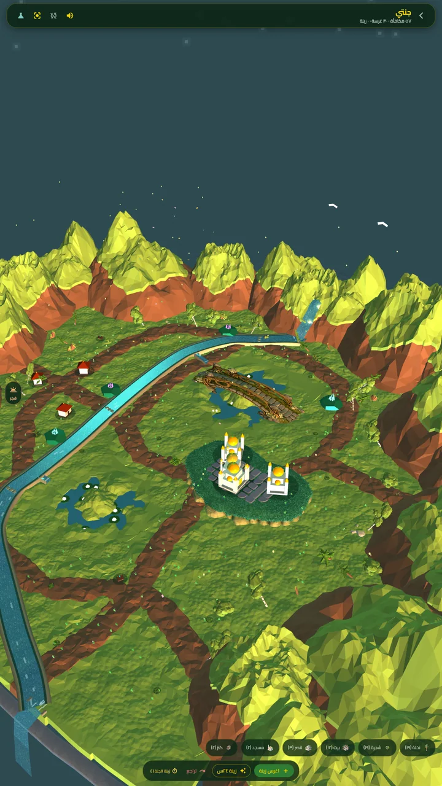
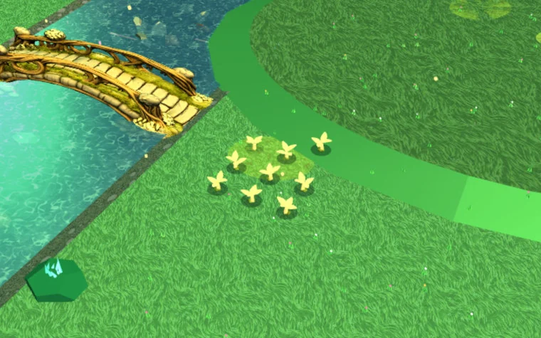
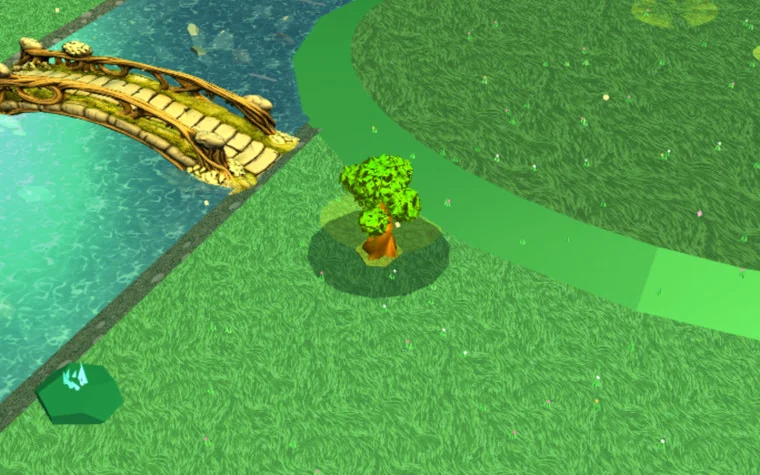
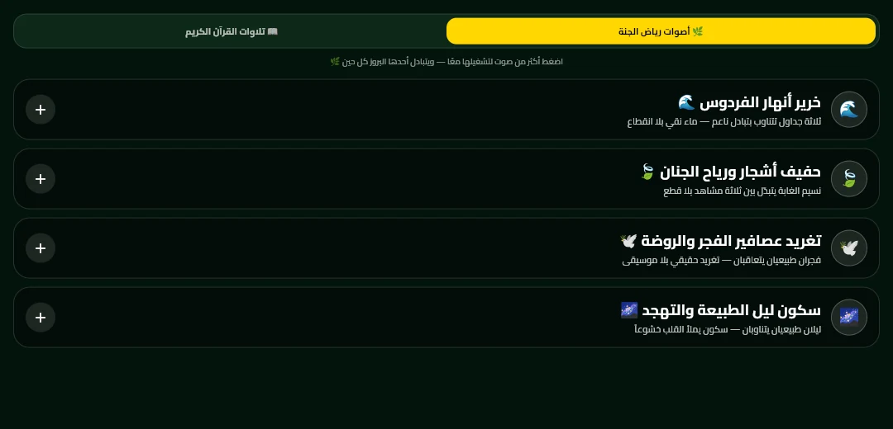
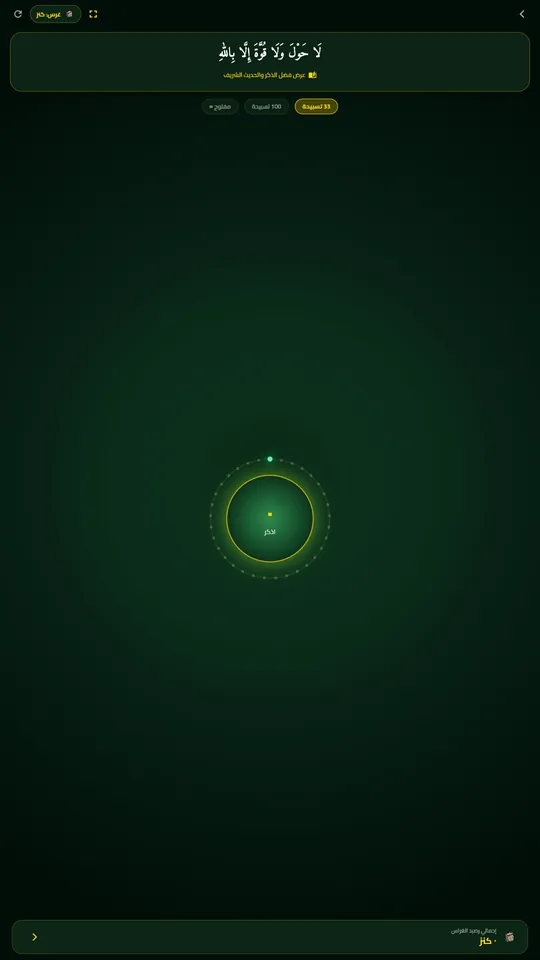

٠١
اختر ذكرك أو وردك
من أذكار اليوم المقترحة أو صلوات الجمعة أو قائمة الأوراد الكاملة — كل ذكر له ثمرته المباركة ونوع غرسه المخصص.
﴿فَاذْكُرُونِي أَذْكُرْكُمْ وَاشْكُرُوا لِي وَلَا تَكْفُرُونِ﴾البقرة ١٥٢
عدّاد أذكار هادئ مع وضع الخشوع، وسكينة طبيعية وتلاوات نقية، وعالم ثلاثي الأبعاد فردوسي يكبر ويزدهر مع كل تسبيحة تغرسها. بياناتك على جهازك وحدك، بلا حساب، بلا إعلانات.
⚡ حجم مخفّض 24MB· تثبيت مباشر وتحديثات تلقائية· دعم أندرويد 8 إلى أحدث إصدار
iPhone & Webالنسخة قيد التجهيز وقريبًا للجميع

٦٧ شبكة نهر سماوي ٥ مراتب نمو وتطورانقر على المسبحة الفردوسية لترى كيف يتحول ذكرك إلى ثمرات وغراس في الوقت الفعلي.
لا إعداد طويل ولا حساب. تفتح، تذكر، فتكبر جنتك وتزهر أمامك.
من أذكار اليوم المقترحة أو صلوات الجمعة أو قائمة الأوراد الكاملة — كل ذكر له ثمرته المباركة ونوع غرسه المخصص.
لمسة واحدة تحتسب، اهتزاز هابتك خفيف يؤكد، وشاشة صافية في وضع الزن تُخفي كل ما عدا العدّاد لصفاء القلب.
كل ذكر يغرس في الجزيرة، وكل عشرة أذكار تُدمج شتلاتك في شجرة يانعة مكتملة. المشهد يتغير وينبض بالحياة أمام عينك.
العدد الكلي يحدّد المرتبة، وعدد غرسك يحدّد شكل النموذج وتفاصيله داخل المرتبة نفسها.


كل عشرة أذكار تُدمج تلقائياً في نموذج واحد مكتمل، والباقي يظهر كشتلات منتظرة. المرتبة التالية تزيد طول النموذج وهيبته بفارق هندسي مقاس لا ينكمش أبداً.
ليست موسيقى ولا أصوات مصطنعة. طبقات طبيعية تتنفس بمعايرة صوتية هادئة (-24 LUFS)، وقناة قرآن كريمة تخفض الطبيعة إلى النصف بوقار.

شاشة إذاعة السكينة داخل التطبيق — اختيار وتعديل كل طبقة بانسيابية تامة.
وضع الخشوع (Zen Mode) يُخفي كل التفاصيل المشتتة ويبقى فقط الذكر والعدّاد، مع إبقاء الشاشة مضاءة طوال جلسة الذكر.

لم يُشترَ هذا العالم جاهزاً من متجر. كل تفصيلة قرار اتُّخذ، واختبار كود، وحساب زوايا ومصفوفات رياضية حتى خرج بهذه الدقة والجمال.
ابدأ اليوم بذكر واحد. بعد أيام، سيكون لك عالم فردوسي لا يشبه أحداً، شاهداً لك يوم القيامة.
iPhone & Webقريبًا — النسخة قيد التجهيز